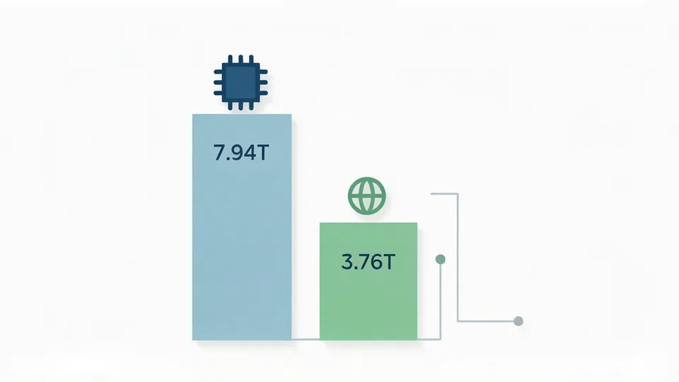
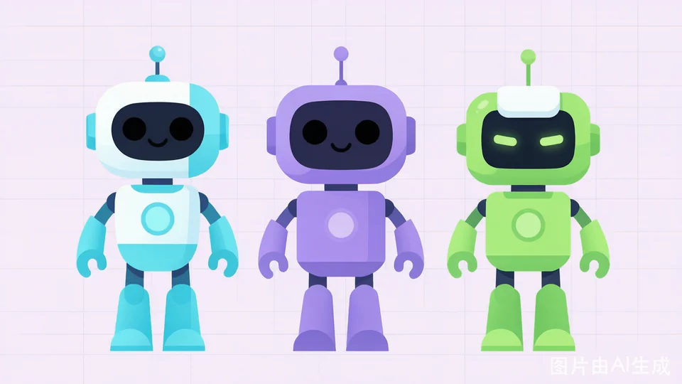
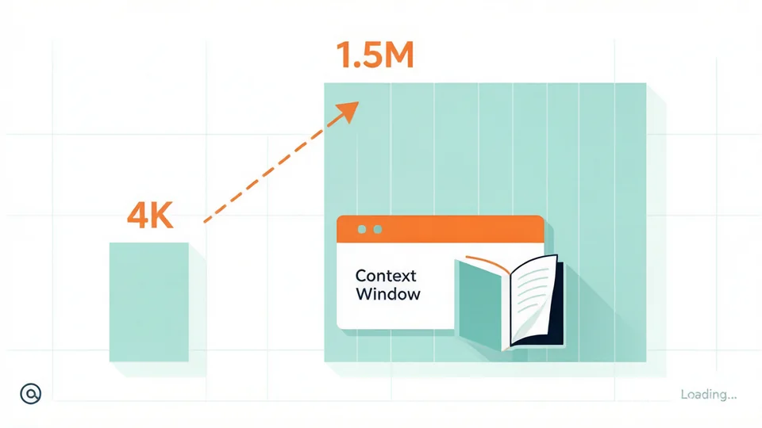
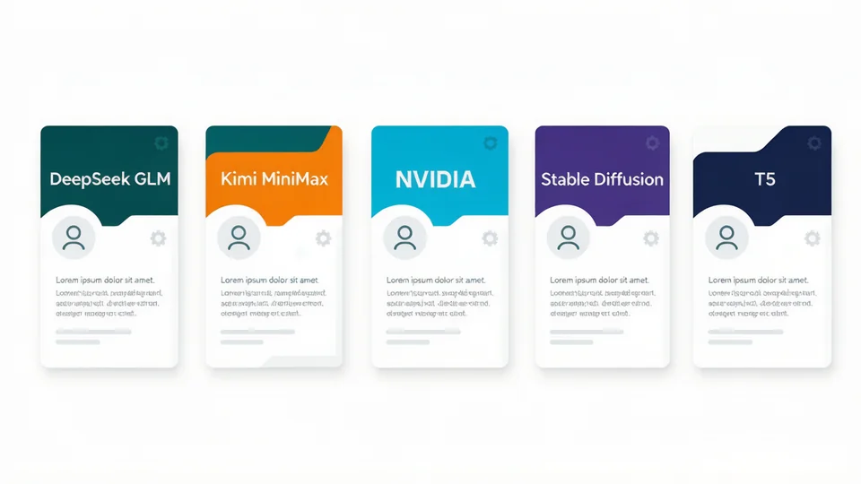
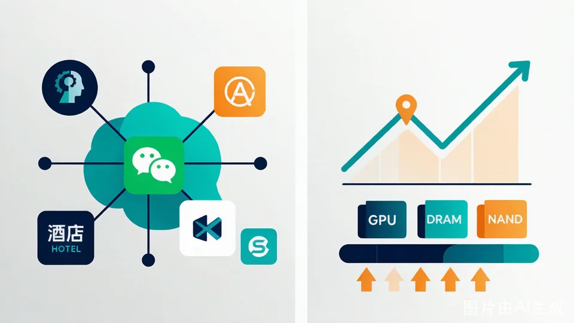

上篇我们跟着 EMP#07 度过了入职 30 天：4 篇日记里它闯了祸、被夸了、最后在早会上"被当成小张"，却觉得"自己是团队一员了"；4 个周会观察里，它戳破了人类开会那些心照不宣的小事。
下篇，镜头拉远，回到"我们"——先看 07 号划的 2026 上半年 AI 圈重点，再算一笔"人机护城河"的账。





"不是你会不会被替代的问题，是你在哪些维度上不可替代。"
2026 年最大的职场焦虑是"AI 抢饭碗"。我们不做空洞安慰，只做诚实对比：07 号作为 AI 方，代表当前旗舰模型水平。
| 维度 | AI 段位 | 人类段位 | 胜者 |
|---|---|---|---|
| 信息检索速度 | 王者 | 青铜 | AI |
| 大规模数据分析 | 王者 | 白银 | AI |
| 创造性发散 | 星耀 | 王者 | 人类 |
| 情感共鸣 | 黄金 | 王者 | 人类 |
| 复杂决策 | 钻石 | 王者 | 人类 |
| 跨领域直觉 | 铂金 | 王者 | 人类 |
· AI 是专才，人类是通才 · AI 会组合，人类会创造 · AI 能模拟共情，不能真正共情
这不是能力测试，而是你的不可替代性分布图——在 AI 不擅长的维度上，你有多强？给下面 6 个维度各打 0–5 分（5 分＝你明显强于 AI），加起来就是你的护城河总分，满分 30。
一个团队之所以是团队，不是因为每个人都能做同样的事，恰恰是每个人能做的事都不一样。
— 企内刊编辑部 · 2026 夏季号
它闯过祸吗？救过场吗？说过什么让你笑出声的话？
把故事投给我们，下期你的名字可能就印在这本内刊里。